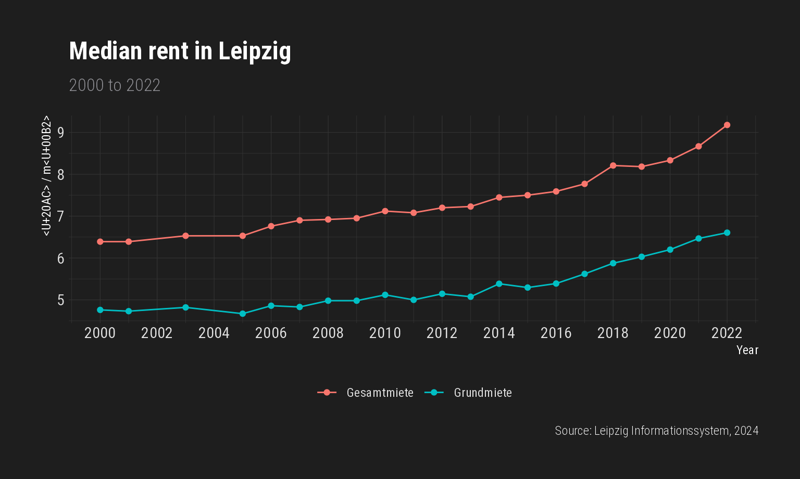

data <- get_lis_housing(rubrik_nr = 3) # flat rents
colnames(data)
#> [1] "KENNZIFFER" "EINHEIT" "2000" "2001" "2003"
#> [6] "2005" "2006" "2007" "2008" "2009"
#> [11] "2010" "2011" "2012" "2013" "2014"
#> [16] "2015" "2016" "2017" "2018" "2019"
#> [21] "2020" "2021" "2022"
data$KENNZIFFER
#> [1] "Haushalte insgesamt" "1-Personen-Haushalte"
#> [3] "2-Personen-Haushalte" "3-Personen-Haushalte"
#> [5] "4- und Mehr-Personen-Haushalte" "Haushalte insgesamt"
#> [7] "1-Personen-Haushalte" "2-Personen-Haushalte"
#> [9] "3-Personen-Haushalte" "4- und Mehr-Personen-Haushalte"
data.sub <- data.sub %>%
pivot_longer(
cols = matches("\\d{4}"),
names_to = "Year",
values_to = "Rent"
) %>%
mutate(Year = as.numeric(str_remove(Year, "JAHR_")))
ggplot(data.sub, aes(
x = Year,
y = Rent,
colour = MIETE,
group = MIETE
)) +
geom_line() +
geom_point() +
scale_x_continuous(breaks = seq(2000, 2024, 2)) +
scale_y_continuous(breaks = seq(4, 9, 1)) +
hrbrthemes::theme_modern_rc() +
theme(legend.position = "bottom") +
labs(
colour = NULL,
y = "€ / m²",
title = "Median rent in Leipzig",
subtitle = "2000 to 2022",
caption = "Source: Leipzig Informationssystem, 2024"
)